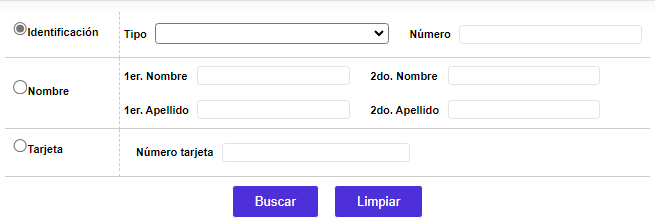
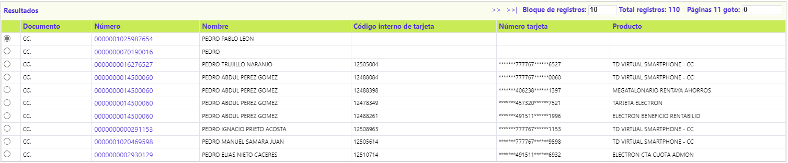

Consulta de clientes
Este formulario puede ser invocado desde el Núcleo o desde el Emisor DB, le permite a la entidad realizar la búsqueda de un cliente o una tarjeta en la base de datos. Independientemente desde donde se esté procurando la consulta, ésta se puede efectuar por: tipo y número de identificación, por uno o los dos nombres o apellidos, o por uno solo de estos, así como por el Número tarjeta.
La opción cuenta con un filtro en el cual se ingresan los criterios disponibles, y luego de activar el botón Buscar, el sistema muestra los registros de clientes coincidentes con la búsqueda efectuada.

Descripción de campos
Identificación |
Radio button en el cual se le indica al sistema que la búsqueda se va a efectuar para un tipo y número de documento de identificación en particular. Por defecto, al ingresar al formulario es la opción seleccionada. |
Tipo |
En este campo campo tipo combo el usuario puede seleccionar el tipo de documento asociado con el cliente que se desea consultar en la base de datos. |
Número |
Campo alfanumérico de 16 posiciones, en el que se ingresa el número asociado al documento seleccionado en el campo anterior. |
Nombre |
Al marcar este radio button, se le indica al sistema que la búsqueda se desea efectuar con base en el nombre y/o apellidos del cliente PN o Razón social para PJ, si aplica. |
1er Nombre |
Campo alfanumérico de 60 posiciones, no obligatorio, en el cual se ingresa el primer nombre del cliente PN o la razón social PJ para la cual se desea consultar la información. |
2do Nombre |
En este campo alfanumérico de 25 posiciones, no obligatorio, se registra el segundo nombre correspondiente al cliente para el que se desea efectuar la consulta. |
1er Apellido |
Campo alfanumérico de 20 posiciones, no obligatorio, en el cual se ingresa el primer apellido del cliente para el cual se desea efectuar la búsqueda en la base de datos. |
2do Apellido |
Este campo alfanumérico de 20 posiciones, no obligatorio, permite consultar en la base de datos a partir del segundo apellido del cliente. |
Tarjeta |
Campo alfanumérico de 23 posiciones, no obligatorio, en el cual se ingresa el número de tarjeta que se desea consultar. |
Cuando se invoca desde el Núcleo, una vez ingresados los datos disponibles y se ejecuta la consulta mediante el botón Buscar, el sistema muestra, en el bloque Resultados, todos aquellos registros de la base de datos que coinciden con los criterios seleccionados, y cada cliente que exista, tenga o no un producto asociado, en el campo Número (de identificación) se dispone del enlace que permite invocar el Detalle de la información del cliente en particular.

Si la Consulta clientes tarjeta débito se realiza desde el Emisor DB / Débito, caso en el cual, si el cliente existe, en el campo Número (de identifación) se dispone del enlace que permite ir al Detalle de la información del cliente en particular y a diferencia de lo descrito más arriba, si el cliente ya posee un producto, dicho registro se muestra en el campo número tarjeta como enlace que permite ir a la Consulta centralizada de tarjetas.